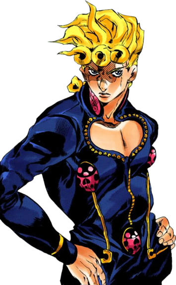
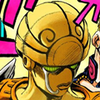

“ Meu nome é Giorno Giovanna, e eu tenho um sonho. ”
Giorno Giovanna (Joruno Jobāna) é o protagonista da quinta parte de JoJo's Bizarre Adventure, Vento Aureo, e o quinto JoJo da série. Giorno é o filho ilegítimo de DIO, concebido com o corpo roubado de Jonathan Joestar. Ele é introduzido como Haruno Shiobana (Shiobana Haruno), um adolescente meio-japonês morando na Itália. Giorno fala da sua intenção de se juntar à poderosa gangue Passione e de seu sonho de se tornar um Gang-Star (combinação de Gangster e Superstar) para trazer a virtude de volta à corrupta máfia italiana.
 Giorno é um adolescente de altura média, e de um porte magro porém musculoso, e é bem mais baixo em estatura do que os JoJos anteriores. Ele possuí um cabelo dourado de tamanho moderado amarrado como um rabo curto e trançado, com três cachos distintivos de grande tamanho em sequência sobre sua testa. Seu cabelo era originalmente preto e despenteado porém se transformou após despertar seu Stand. Seus olhos, especialmente em suas primeiras representações, são afiados nas pontas similarmente aos de seu pai. veste um traje de duas peças com uma traseira xadrez e várias partes ornamentadas, incluindo emblemas em formato de asas no pescoço e uma abertura em formato de coração na parte do peito. A característica mais distintivas em seu traje são os três emblemas de joaninhas localizados em ambos lados de seu peito e diretamente abaixo de seu zíper, combinando com a aparência de seu Stand. Mais pra frente, seus sapatos também tem o mesmo emblema de joaninha. Ele usa pequenos brincos em cada orelha.
A infância de Giorno foi marcada pela solidão e infelicidade devido aos maus-tratos e abuso de seu padrasto. Como resultado, ele era inicialmente frio e indiferente com todos e achava si mesmo ser uma escória por causa do jeito que as pessoas o tratavam. Aqueles que o conheciam facilmente pensariam que ele se tornaria uma pessoa perversa. Isso mudou quando Giorno salvou um gângster ferido. O homem o cuidava e o protegia daqueles que o faziam mal, e com isso Giorno aprendeu que podia confiar em outras pessoas. Desde então, ele se tornou uma pessoa mais confiante e solícita.
Stand Golden Experience, é um dos Stands mais versáteis da série. Ele possui a habilidade de criar e manipular vida, o que o Giorno frequentemente usa para produzir plantas e animais pequenos. Ambos podem ser usados para uma variedade de propósitos variando de disfarce à rastreamento. Como um Stand de curto-alcance e grande poder, ele é capaz de soltar uma rápida barragem de socos, o que Giorno usa quase exclusivamente com intenção letal.
| Imagem | Estreia | Tipo | Habilidade | Grito de Batalha |
|---|---|---|---|---|
|  | Capítulo 440 / GW Episódio 1 | Curto-Alcance | Retorno ao "Zero", Criação de Vida |
Giorno prova ser um usuário de Stand imaginativo e proficiente, senão passivo em seu progresso. Graças à seu conhecimento sobre biologia, fauna e flora, Giorno pode eficientemente usar o poder de Gold Experience para dar vida ao pensar no melhor ser vivo para criar e tomar controle. Por exemplo, ele especificamente criou uma cobra contra Illuso que estava escondido no mundo do espelho, usando sua suposta tendência à procurar fontes de calor para encontrar o inimigo. Giorno também provou ser imaginativo usar as propriedades de seus poderes para sua vantagem, por exemplo explorando a habilidade de Gold Experience de rapidamente criar árvores como um ataque empalador em área de efeito, ou fazer uma árvore morrer para fazer Black Sabbath se tornar vítima da luz do sol. Entretanto, Giorno não procurou o potencial total de seu Stand, diferente de seu pai, por exemplo, tendo nenhuma necessidade em usar Gold Experience em uma luta até que confrontasse os membros da Passione, ele havia apenas recentemente descoberto a habilidade de Gold Experience de infundir pessoas com vida durante sua briga com Bucciarati e da mesma maneira teve de observar o poder de Baby Face para se inspirar em criar órgãos específicos. Giorno trabalha bem junto à um parceiro. Ele é essencialmente o curandeiro da equipe e é muitas vezes parceiro de membros da equipe como Guido Mista, cujas balas são projéteis perfeitos que podem ser transformados em seres vivos à distância. Uma vez, Giorno transformou as balas em uma árvore e conseguiu prender um helicóptero que normalmente não teria sido capaz de ser alcançado.
Inteligência: Ele então usa suas observações para procurar qualquer fraqueza na parte de seus oponentes e adivinhar o que eles farão, muitas vezes utilizando suas ações contra eles, Usando seu Stand de formas imaginativas, Giorno dá a si mesmo grandes possibilidades, a exploração do poder de Gold Experience e a característica dos animais dos quais ele cria permite Giorno à, entre outras coisas, se reposicionar e rapidamente localizar seus inimigos.
Conhecimento: Giorno tem um grande conhecimento sobre biologia. Seu conhecimento enciclopédico de fauna e flora o permite transformar objetos nos seres vivos mais adequados com seu objetivo, tanto como deduzir os poderes de seus inimigos.
Carisma: Giorno é um indivíduo carismático, capaz fazer as pessoas ficarem de seu lado facilmente, por fala ou ações. Seu hábito de observar os outros o permite então deduzir a melhor forma de impressioná-los e então fazer deles seus aliados, os garantindo determinação e confiança quando trabalham com ele. Discutivelmente, essa característica é provavelmente herdado de seu pai.
Ladroagem Furtiva: Como ele mesmo admitiu, Giorno é um talentoso batedor de carteira. Mesmo sendo demonstrado apenas uma vez, sua habilidade é inegável, como ele foi capaz de roubar a carteira de um guarda de prisão no meio de sua revista. No anime, Giorno foi capaz de pegar uma carteira de volta de um batedor de carteira que havia roubado de uma mulher. Depois de retornar a carteira para ela, ele usa sua habilidade de Stand para transformar o dinheiro na carteira em borboletas, que então voaram de volta para ele.
Dio Brando/DIO: Enquanto Giorno nunca foi mostrado interagindo com seu pai de nascimento, ele mostrado dando valor à certo ponto, como sua carteira foi mostrada contendo uma fotografia do DIO. Giorno herda um pouco da natureza brutal e cruel de DIO, tanto quanto sua ambição e carisma. Entretanto, ele não as usa para fins malevolentes. Giorno até utiliza seus gritos de batalha "WRYYY!" e "Muda!".
Jonathan Joestar: Sem Giorno saber, sua ascendência biológica vem do DNA de Jonathan. Como DIO concebeu Giorno usando o corpo de Jonathan, isso permite Giorno à ter a Marca de Nascença Joestar. Do Jonathan, Giorno parece ter herdado sua natureza nobre, educada, e em geral bondosa em relação à pessoas boas, observado pelo Koichi até certo ponto. Mesmo sendo DIO aquele que concebeu Giorno, Koichi notou que a influência da linhagem Joestar é visível.
Mãe (nome de solteira Shiobana): A mãe de Giorno dificilmente cuidava dele quando criança, vendo ele como um óbstaculo na sua vida de festas e frequentemente o deixava sozinho no escuro sempre que saia, nessa mesma escuridão ele se encontrava com medo demais para sequer chorar.
Padrasto: Inicialmente, o padrasto de Giorno frequentemente bateria em Giorno quando sua mãe estava fora, furioso com seu hábito de sempre tentar ler as pessoas (mesmo sendo seu abuso a causa desse comportamento). Isso muda quando Giorno conhece o gângster, depois do qual seu padrasto tinha sido provavelmente intimidado à parar de bater no Giorno novamente.
Donatello, Rikiel, e Ungalo: Os três são meio-irmãos do Giorno. É desconhecido se ele sabia de suas existências.
Jotaro Kujo: Mesmo nunca tendo se conhecido formalmente, Jotaro investigou Giorno devido às suas conexões com ambos DIO e a família Joestar. Tendo descoberto a relação de Giorno com DIO, Jotaro evitou conhecê-lo em pessoa e confiou em Koichi para julga-lo no seu lugar. É assumido que Jotaro não tem nenhum mau desejo em relação à ele seguindo o reporte de Koichi sobre ele ser uma pessoa razoável e parecida com os Joestars.